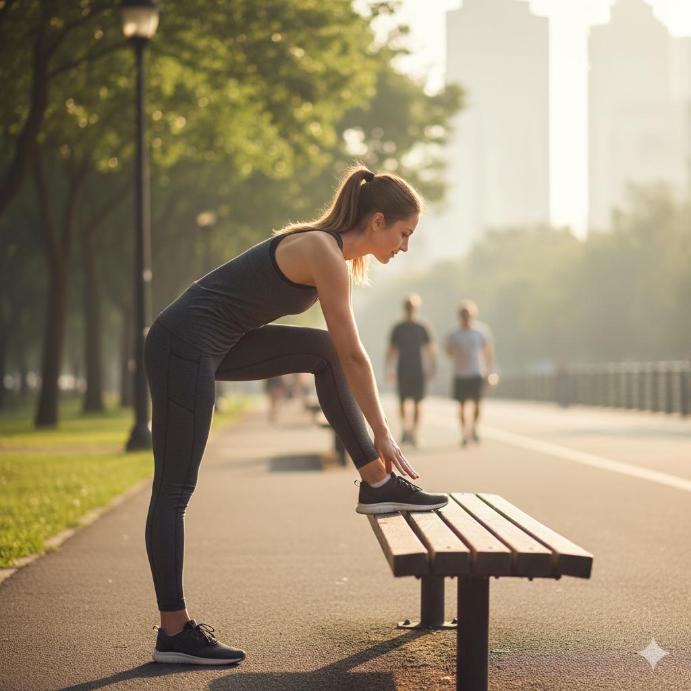
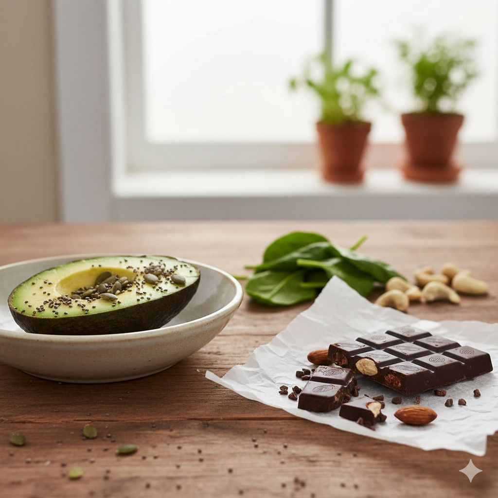

Are you tired of feeling tired? That afternoon slump hitting you like a ton of bricks? Before you reach for another cup of coffee or a sugary snack, let me share with you some scientifically-backed strategies that can transform your energy levels naturally and sustainably.
1. Strategic Hydration
Even mild dehydration can significantly impact your energy levels and cognitive function. But it's not just about drinking more water - it's about when and how you hydrate. Start your day with a large glass of water to replenish what you've lost overnight. Keep a water bottle at your desk and take regular sips throughout the day. Add a slice of lemon or cucumber for flavor and extra nutrients.
Research shows that proper hydration improves blood flow to the brain, enhances nutrient delivery to cells, and helps regulate body temperature - all crucial for sustained energy.
2. Movement Breaks
When you feel that afternoon slump coming on, your first instinct might be to sit still and rest. Counterintuitively, movement is often the better solution. Taking a 5-10 minute walk, doing some light stretching, or even just standing up and moving around can boost circulation and oxygen flow to your brain and muscles.
Studies have found that brief bouts of physical activity can be more effective than caffeine at improving energy and concentration. Try the "20-20-20" rule: every 20 minutes, look at something 20 feet away for 20 seconds, and stand up and stretch.
3. Balanced Nutrient Combinations

The foods you eat directly impact your energy production. Instead of reaching for simple carbs that cause energy spikes and crashes, focus on balanced meals containing complex carbohydrates, lean proteins, and healthy fats. This combination provides sustained energy release.
For example, instead of a plain bagel for breakfast, try whole-grain toast with avocado and an egg. The fiber, protein, and healthy fats will keep your blood sugar stable and energy consistent for hours.
4. Power Breathing Techniques
Oxygen is fuel for your cells, and most of us don't breathe deeply enough. Specific breathing techniques can instantly increase oxygen flow and energy. Try "box breathing": inhale for 4 counts, hold for 4 counts, exhale for 4 counts, hold for 4 counts. Repeat 5-10 times.
Research from the University of California shows that controlled breathing can reduce stress hormones that drain energy while increasing alertness and mental clarity.
5. Strategic Napping
When done correctly, napping can be a powerful energy restoration tool. The key is timing and duration. A 10-20 minute "power nap" in the early afternoon (between 1-3 PM) can significantly improve alertness and performance without causing grogginess.
Avoid napping for longer than 30 minutes during the day, as this can interfere with nighttime sleep. Find a quiet, dimly lit space and set an alarm to ensure you don't oversleep.
6. Natural Light Exposure
Your circadian rhythm heavily influences your energy levels. Exposure to natural light, especially in the morning, helps regulate this internal clock. Try to get at least 15-30 minutes of morning sunlight without sunglasses (but never look directly at the sun).
If you work in an office with little natural light, consider using a light therapy box that mimics natural sunlight. Studies show this can significantly improve energy levels, especially during winter months.
7. Magnesium-Rich Foods
Magnesium plays a crucial role in converting food into energy. Many people are mildly deficient in this mineral without realizing it. Include magnesium-rich foods like spinach, almonds, avocado, dark chocolate, and pumpkin seeds in your diet.
A study published in the Journal of Nutrition found that individuals with adequate magnesium levels had better muscle performance and required less oxygen during physical activity, indicating more efficient energy production.
8. Cold Exposure
A brief cold shower or splashing cold water on your face can provide an instant energy boost. The shock of cold triggers the release of norepinephrine, a hormone and neurotransmitter that increases alertness and focus.
Research from Virginia Commonwealth University found that cold exposure can improve mood and reduce fatigue. Try ending your shower with 30-60 seconds of cold water, or keep a facial mist in the refrigerator for quick pick-me-ups during the day.
9. Mindful Task Switching
Mental fatigue often comes from prolonged focus on a single task. The brain benefits from variety. Instead of multitasking (which actually drains energy), try mindful task switching. Work on a cognitively demanding task for 45-60 minutes, then switch to something different for 15-20 minutes.
This approach uses different neural pathways, giving tired parts of your brain a rest while keeping you productive. The key is intentional switching rather than reactive distraction.
10. Adaptogenic Herbs
Certain herbs known as adaptogens can help your body better handle stress and fatigue. Rhodiola rosea, ashwagandha, and ginseng have been shown in studies to reduce fatigue and improve mental performance under stress.
Always consult with a healthcare provider before starting any new supplement, especially if you have underlying health conditions or take medications. Quality varies significantly between brands, so choose reputable sources.
Frequently Asked Questions
Final Thoughts: Sustainable energy isn't about quick fixes but about optimizing your body's natural energy production systems. By incorporating these evidence-based strategies into your daily routine, you can break free from the cycle of caffeine and sugar dependence and enjoy consistent, natural vitality throughout your day. Remember, small consistent changes often yield the most significant long-term results.